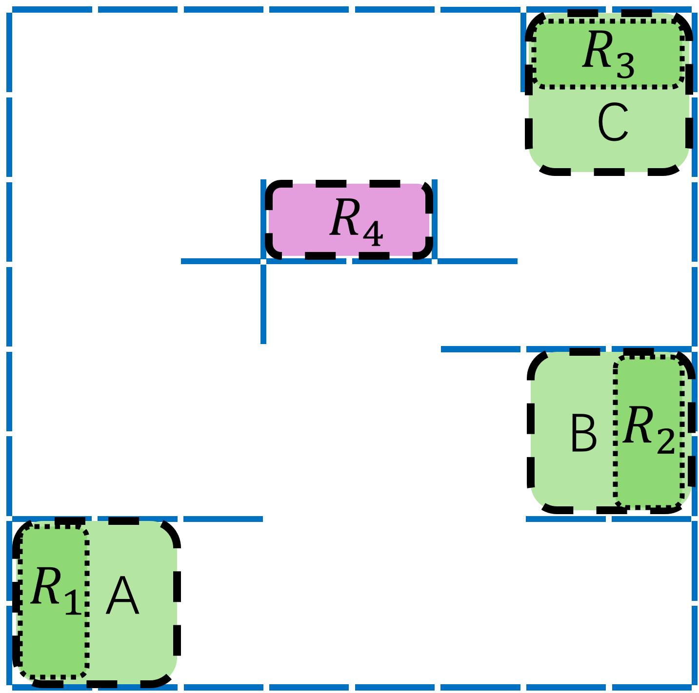
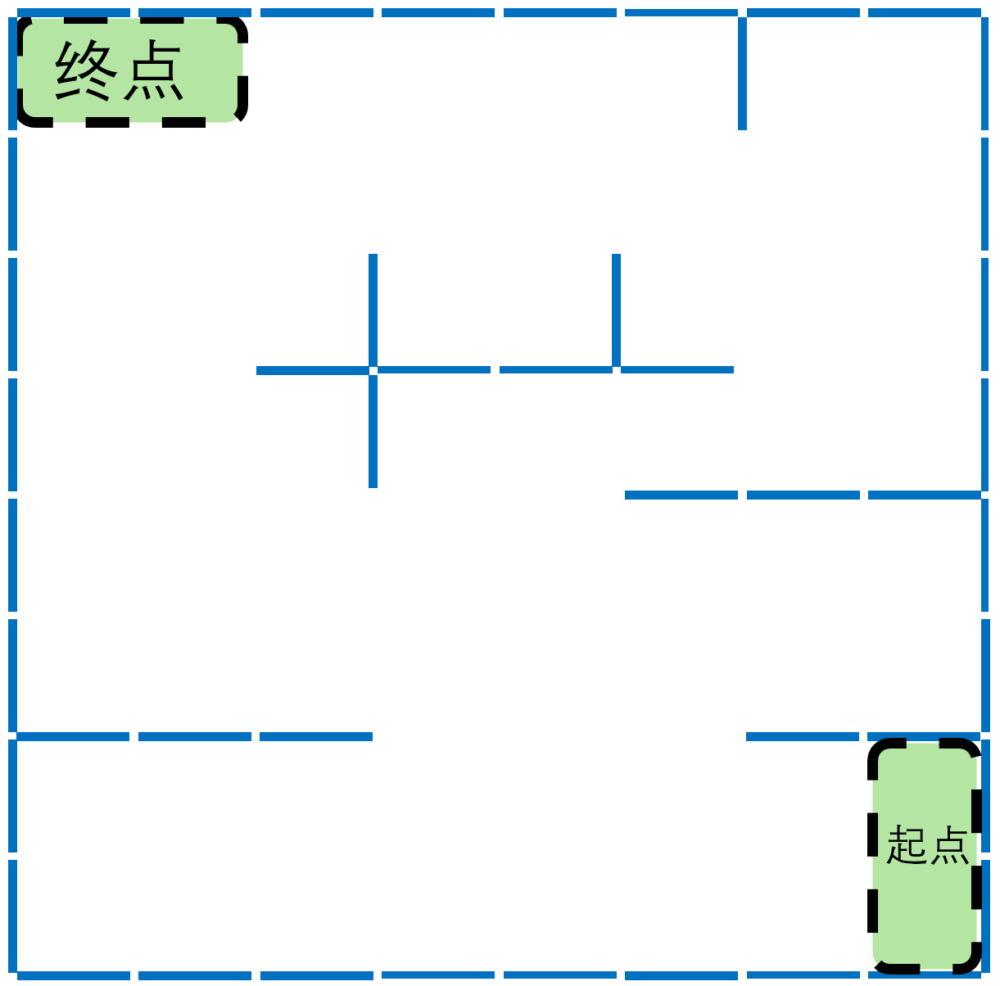
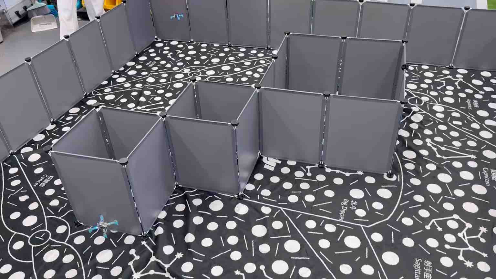

比赛说明：综合项目展示任务
Integrated Project Competition
运行前确认小组 URI
本实验的 Python 脚本统一从环境变量 CFLIB_URI 读取实验 3 中分配的完整 radio URI，不需要把小组地址重复写入每个代码文件。打开新终端后先执行：
echo "$CFLIB_URI"输出必须与本组标签上的完整 URI 完全一致，包括接口编号、channel、速率和 address。若输出为空或不正确，请返回实验 3 的“将完整 URI 保存到虚拟机”步骤重新设置；确认无误后再运行本实验脚本。
一、综合项目展示任务说明
本任务面向本次暑期学校前三天实验内容，旨在让同学们综合展示环境配置、无人机控制、传感器应用、路径规划与团队协作能力。展示任务鼓励大家在安全边界内发挥创意，把前面完成的实验内容组织成可演示、可解释、可复盘的小项目。
二、任务内容
本次综合项目展示分为创意任务和竞速任务两个板块。完成基础任务即可视为达到展示要求；如果任务完成效果更好，或在路径设计、控制策略、传感器使用、团队协作等方面体现出自主优化思路，可在展示评价中获得更高反馈。
创意板块
该板块的展示任务希望同学们根据学习到的 Crazyflie 无人机传感器应用知识以及相应的软件编程知识来完成，不限定使用何种传感器或程序模块，鼓励同学们在规则基础上发挥创意，以更优策略完成任务。
1. 题目说明
现在先对该板块的实践展示任务的任务要求做出说明。首先任务的地图环境如下所示，各个任务区域的示意区间也已经标注出来。其中，A、B、C区域的大小为2*2的挡板大小（矩形挡板的高为45cm，宽为35cm，挡板为竖立放置,即ABC区域实际大小为70cm*70cm），R1、R2、R3、R4区域为1*2的挡板大小，其中R1、R2、R3分别位于A、B、C区域内。
大体的任务要求如下：无人机摆放在A区域内任意位置起飞，需要经过B和C点最终降落在A点内。经过B点和C点的顺序任意发挥，即大体上的途经点要求为：
ABCA或者ACBA
奖励机制：无人机的飞行路径经过了R2、R3、R4都会获得奖励。
希望同学们考虑整体无人机飞行路径的代价：飞行路径长度+奖励

2. 展示流程
为保证飞行的安全以及稳定行，无人机的飞行速度限定在0.3m每秒以下且整个流程中恒定不变，且每次准备好展示给老师展示前，需要给老师展示代码细节和飞行速度等参数，等待老师确认之后运行该代码让无人机起飞，算作此次展示可以记有效成绩。展示时的团队合作中，期望一名同学控制电脑终端，负责起飞和紧急停止等工作，另外一名同学负责从起飞到降落全程录像作为成绩的一个评判标准的备份，老师会在旁边从无人机开始在xy平面上移动开始到开始降落为止进行计时。最终成绩的计算公式如下：
S:最终成绩（m），越小越好
v:无人机在整个任务流程中设置的恒定的速度（m/s）
:无人机在整个任务流程中从在起点开始在xy平面上开始移动到开始降落的计时（s）
:在代码中为了稳定无人机姿态，在无人机每进行一步移动后调用time.sleep的总时间（s）,在起飞前给老师确认代码时，确定这些时间。
Reward:R2和R3的奖励值为1.4m，R4的奖励值为4.9m，R1的奖励值为1.05m
Punish:最终降落在A区时的位置不规范，惩罚0.35m
3. 评价标准细则
创意板块的最终展示评价结果从低到高分别为：通过、良好、优秀。
完成基础的任务（即从A点起飞，经过B和C再回到A）则可以在该板块取得通过的成绩。
整个飞行过程中无人机的高度不能超过挡板的高度，且不能与挡板发生碰撞（极其轻微的刮擦不算），否则算作此次飞行任务失败。
无人机的垂直投影的评判标准以四个电机的位置为准，四个电机的垂直投影都在某个区域视为投影完全在这个区域内，有一个电机的投影经过某个区域，则视作是经过这个区域。
无人机的垂直投影完全经过B和C区域内算作历经了B和C区域，无人机降落时完全位于A区域内算作降落成功，若降落在A区时整个无人机只有部分位于A区，则罚0.35m的成绩（总成绩加上0.35m）。若降落时整个无人机完全不在A区域则视作此次飞行任务失败。
对于R2、R3、R4区域，在飞行过程中无人机的垂直方向上的投影经过了该区域则可以获得该区域的奖励，无人机降落时静止在地面上的投影有两个电机的部分位于R1区域则可以获得该区域的奖励。
4. 展示评价说明
最终成绩结算时，前三分之一排名的组别获得优秀的评级，中间三分之一排名的组别获得良好的评级，后三分之一排名的组别获得通过的评级。
鼓励技术创意：
累计取得两次有效成绩且这两次成绩都没有被罚时，两次运行无人机的代码所用的API不完全相同（举例：motioncommander、multiranger、positioncommander）。
累计取得两次有效成绩且这两次成绩都没有被罚时，两次运行无人机的代码所采用的大体的运行逻辑完全不同（举例：条件控制语句while和if else的运用）。
其它被老师认为体现了自主创意的技术运用。
达成以上一个条件，则可以在最终成绩定榜结算时，评级往上升一级，达成两个条件可以评级升两级，封顶为优秀评级。
5. 展示建议
建议无人机起飞时远离挡板，以及起飞速度设置得低一点，便于稳定起飞姿态，减小每次起飞稳定位置后的姿态。
保证随时有同学控制着终端，无人机如果开始不停地剐蹭挡板，请尽快终止程序免于对无人机硬件的损坏。
注意在场地试飞时的秩序，同学们自觉礼让，避免无人机相撞和影响。
如以上规则遇到不明确不理解的地方，咨询老师以明确标准。
竞速板块
该板块的展示主题为“速度”，最快完成任务即为最优。但是同学们一定要注意飞行安全，同时也要尽量保证无人机硬件的安全与完整。
1. 题目说明
该板块的地图环境与创意板块的地图环境一致，详细地图尺寸参数可以参考创意版模块部分的说明
大体的任务要求如下：无人机在如图所示的起点任意位置开始起飞，降落在终点的区域。从无人机开始起飞离开地面开始计时，到无人机完全降落静止在终点区域为止。所用时间更少成绩更好。不限制飞行高度，但是一定要注意飞行安全！注意保护无人机硬件不被损坏！

2. 展示流程
两种方式
①准备好了之后找到老师帮助计时登录成绩，将会按照上述的题目要求帮助计时录入成绩。
②可以自己拍摄视频录下整个飞行过程，以视频的时长来判别整体花费的时间登入成绩，但是一定要注意视频要拍清楚无人机起飞和降落的整个过程，拍清楚无人机从什么时候开始起飞，以及无人机最终降落的位置要拍清楚，是否位于最终降落的区间。
3. 评价标准细则
最终无人机是否降落在终点的评判标准为，无人机至少有两个电机的位置处于终点区域内，在边界上也算。如果没有达到上述标准，但是至少有一个电机的位置处于终点区域内或者位于边界上，罚时5秒计入成绩。其它的降落情况都不计入成绩。
4. 展示评价说明
竞速板块最终结果按照小组进行排序，并与创意板块表现一起纳入综合展示评价。
5. 展示建议
保证随时有同学控制着终端，无人机如果开始不停地剐蹭挡板，请尽快终止程序免于对无人机硬件的损坏。
注意在场地试飞时的秩序，同学们自觉礼让，避免无人机相撞和影响。
如以上规则遇到不明确不理解的地方，咨询老师以明确标准。
强烈建议同学们可以先有一个比较基础的成绩，再有成绩的基础上继续优化。
最终综合展示评价说明
原则上两个板块（创意+竞速）的展示表现各占50%，综合评价指数计算如下：
综合评价指数 =（创意板块评价排名+竞速板块排名）/2
在创意板块中，获得优秀评价的排名为1，良好评价的排名为2，完成基础要求的排名为3。
最终，综合评价指数越小的组别，综合项目展示评价越好。
比赛场地记录
比赛评价应结合现场飞行、终端日志和影像记录，核对关键通行点与安全边界。

综合任务飞行记录
视频记录用于核对路线完成情况、安全边界和评分依据。